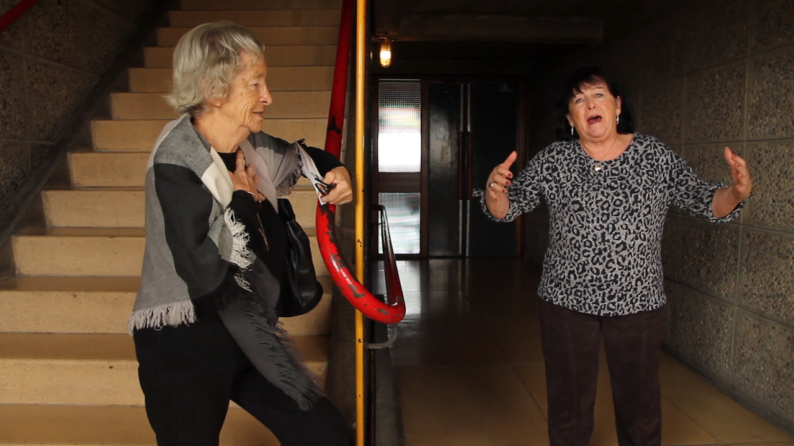
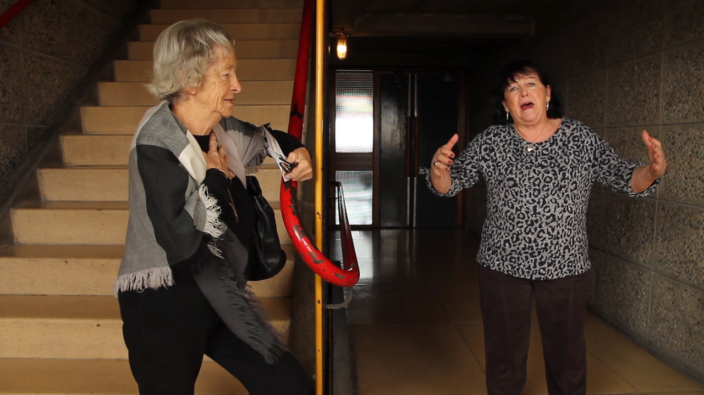
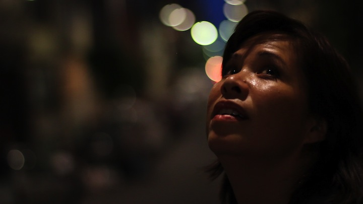
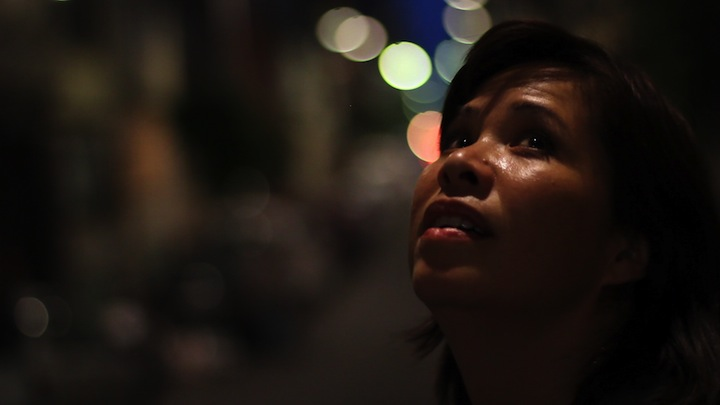
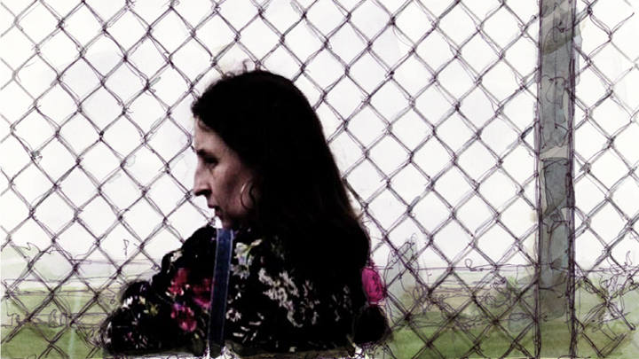
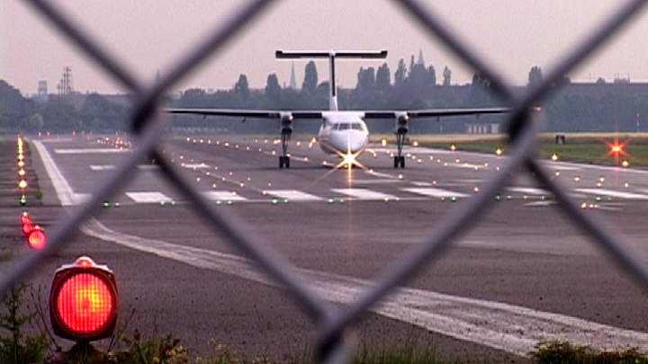
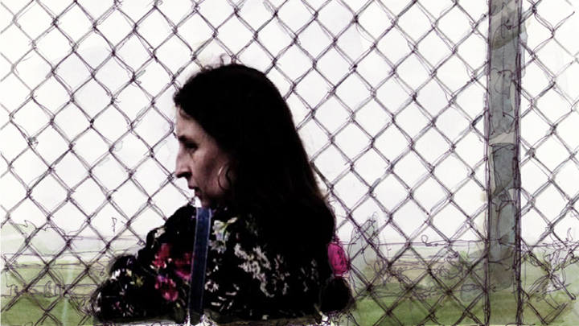
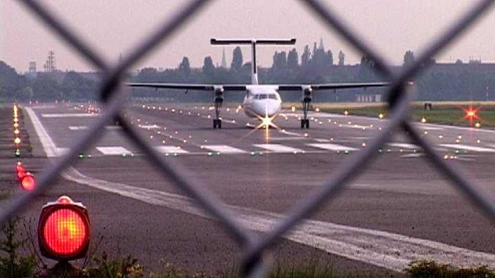

Field Trip
Field Trip
(90 min, Interactive Documentary)
—
Field Trip is an open source documentary about an unconventional place: The Tempelhof Field in the heart of Berlin.
- Best VR Interactive Documentary
Melbourne Documentary Filmfestival - Best Documentary
Lovie Award Gold - People’s Choice Best
Lovie Award Gold - Medienprofi Förderung
Medieninnovationszentrum Babelsberg (MIZ) - Funded by
Rudolf Augstein Stiftung
 


 



 


